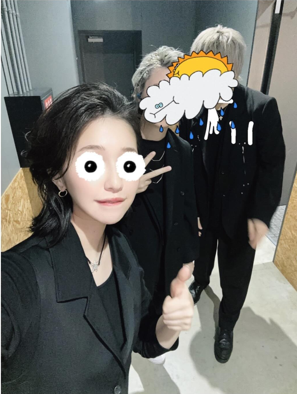

Who is Tuyu?
TUYU (ツユ) is a Japanese pop group consisting of
ぷす (Pusu) on guitar, 礼衣 (Rei) as vocals, and Miro on piano.
おむたつ(Omutatsu) has been in charge of the illustrations until March 2022, and AzyuN is in charge of video design.
Since then 双葉陽 (HutabaHaru) has been in charge of illustration.
The group was formed on June 12, 2019.
Its name comes from the Japanese word for “rainy season” during which it was formed.
It currently has over 1,100,000 YouTube subscribers. In addition to its showpiece titled “Compared Child” (tr. the girl who gets compared) that has had over 43 million views, every music video that they’ve uploaded have been played over a million times. They’re constantly ranked in both Japanese and foreign music distribution sites and appear in their popular playlists.